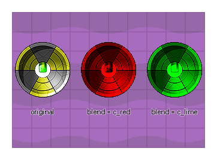

Diese Funktion steuert das Mischen (oder "Tönen") des Sprite-Sprites. Der Standardwert ist -1 (der die Konstante darstellt.) c_white, das auch verwendet werden kann). Jeder andere Wert (einschließlich interner Farbkonstanten wie c_red, oder c_aqua ) mischt die angegebene Farbe mit dem ursprünglichen Sprite. Sie geben die Sprite-Element-ID an, die Sie erhalten, wenn Sie ein Sprite-Element mit erstellen layer_sprite_create() oder wenn Sie die Funktion verwenden layer_sprite_get_id() ), und legen Sie dann die Mischfarbe fest. Unten sehen Sie ein Beispiel für ein Sprite, das mit verschiedenen Farben gemischt wurde:  Bitte beachten Sie, dass Sie versuchen sollten, das Mischen auf der HTML5- Plattform einzuschränken (es sei denn, Sie verwenden WebGL), da jedes gemischte Sprite separat zwischengespeichert werden muss und die Verwendung vieler gemischter Sprites die Leistung beeinträchtigen kann (Sie können auch die Cachegröße mithilfe der Funktion festlegen sprite_set_cache_size() ).
layer_sprite_blend(sprite_element_id, blend);
Streit Beschreibung sprite_element_id Der eindeutige ID-Wert des zu ändernden Sprite-Elements blend Die Farbe, die mit dem Sprite-Sprite gemischt werden soll (Standardeinstellung ist c_white )
N/A
var lay_id = layer_get_id("Asset_sky");
var spr_id = layer_sprite_get_id(lay_id, "Clouds");
layer_sprite_blend(spr_id, c_gray);
Der obige Code erhält den ID-Wert des Sprites mit dem Namen "Clouds", der dem Layer "Asset_sky" zugewiesen ist, und färbt ihn dann farblich ab.